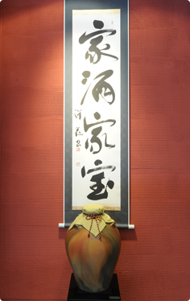
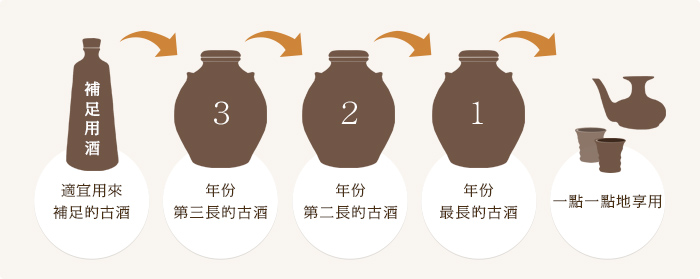

泡盛的傳統－shitsuigi
家酒家寶

泡盛僅放於酒缸中成不了優質的熟成古酒。
為了能持續享用泡盛芳醇的酒香和柔和的口感、需要進行shitsugi這個工序。通過shitsugi讓原酒得到刺激活化、使得酒質更加安定。
您要不要嘗試製作視泡盛為家寶、傳承百年、兩百年的本酒廠的古酒呢?
什麼是shitsugi
首先準備三個酒甕。
以存放年份最久的1號酒缸為母酒、再按年份順序依次準備2號酒缸和3號酒缸。
母酒在每年的紀念日等時日子開封一次、取出飲用少許後、從2號酒缸中舀出一部分泡盛補足到1號酒缸、再從3號酒缸中舀出一部分泡盛補足到2號酒缸。最後把另外準備的補足用一升泡盛補足到3號酒缸。

沖繩的先祖們就是運用了這一獨特的手法來精心培育泡盛古酒、這樣就可以隨時飲用到美味的泡盛佳酒了。
無法自備多個古酒缸時、我們為您準備了一立升43度的補足用古酒、敬請放心。